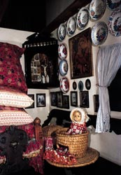

|
|
|
Thermalkurort
Mezőkövesd-Zsóribad
|
|
|
|
Lage: Der Kurort
Mezőkövesd-Zsóribad (ungarisch:
Mezőkövesd-Zsórfürdő) liegt 130 km von Budapest entfernt in der Nähe von
Eger auf der Autobahn M3 nach Nyíregyháza in
nordöstlicher Richtung. Das Thermalbad in der
Ortschaft "Zsóribad" liegt etwas westlich,
außerhalb der Stadt Mezőkövesd im
Matyófeld. |
|
|
Thermalbad: Eine
am Stadtrand gelegene, im Jahre 1939 bei Ölborungen entdeckte Thermalquelle zieht
viele kur- und erholungssuchende Badegäste
an. Das Zsóribad ist das größte
Thermalbad in Nordungarn, es ist ganzjährig geöffnet, der Strand nur vom 1.
Mai bis Ende September. Die Wassertemperatur in den
einzelnen Thermalbecken beträgt 33, 36, 38 und 40°C. Die
Badanlage selbst bietet viele Möglichkeiten zur Erholung und
Entspannung, besonders beliebt ist das Kreis-Wellenbad und das
Kinderbecken. In den mittlerweile 21 Badebecken findet jeder Badegast seine
Entfaltungsmöglichkeiten. |
|
Eigenschaften
des Thermalwassers:
natürliches Thermalwasser, das
Kalzium-Magnesium-Wasserstoffkarbonat und freie Kohlensäure
enthält und wegen seines besonders hohen Sulfidgehaltes zu den
schwefelhaltigen Heilwässern gehört.
Indikationen: Das schwefelhaltige
Thermalwasser eignet sich für die Behandlung von rheumatischen
Erkrankungen, Linderung der Beschwerden bei Gelenkabnutzungen,
Behandlung verschiedener Frauenkrankheiten sowie Nachbehandlung von
Verletzungen und orthopädischen Operationen.
|
|
|
Direkt gegenüber dem Thermalbad erwartet Sie die Pension Rózsa mit
einem Spitzenrestaurant und betreut ihre Gäste individuell im
ganzen Jahr. Die Preise sind günstig bis normal. Hier wird echt
ungarisch gekocht, daneben werden viele internationale Gerichte
serviert. |
|
|
 |
Matyófeld ist eine Landschaft, die unter
Kennern von ihrer
farbenprächtigen
Spitze
bekant
ist. In Deutschland und sogar in Brüssel, in der sog. Metropole der Spitzen kennt man nur
weiße oder unifarbene
Spitzen. Wer sich für
farbige Spitzen interessiert, findet sie auch in der Ortschaft
im westlichen Balaton. |
 |
|
|
Matyófeld ist eine Landschaft, die unter
Kennern von ihrer
farbenprächtigen
Spitze
bekant
ist. In Deutschland und sogar in Brüssel, in der sog. Metropole der Spitzen kennt man nur
weiße oder unifarbene
Spitzen. Wer sich für
farbige Spitzen interessiert, findet sie auch in der Ortschaft
im westlichen Balaton. |
|
|
|
Die
Gegend: Die Umgebung ist eine Mittelgebirgslandschaft im
südlichen Ausklang des Tatragebirges, unweit von hier liegt
der mit 1015 Meter höchste Berg Ungarns, der Kékes.
Für motorisierte Reisende bieten sich zahlreiche Ausflugsziele
an - vor allem das nahegelegene
in Richtung Debrecen (das größte und bekannteste
Pusztagebiet in Ungarn) oder die sind besonders
sehenswert. |
|
|
|
Alljährlich
am ersten Juli-Wochenende finden die internationalen
Reittage in Hortobágy statt.
Der 20. August ist Tag des Hl. Stefans und der
größte Nationalfeiertag in Ungarn. Dann gibt es
besondere Folkloreveranstaltungen in der Nähe der
berühmten Puszta-Brücke mit
den 8 "Löchern" (d.h. Brücke auf 9 Pfeilern) bei
Hortobágy. |
|
| |
|
Ungarn-Tourist Team

|
| |
| |
|
|